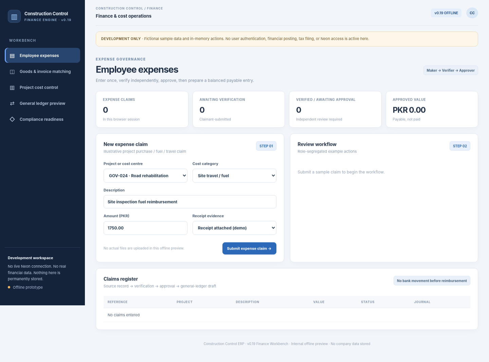
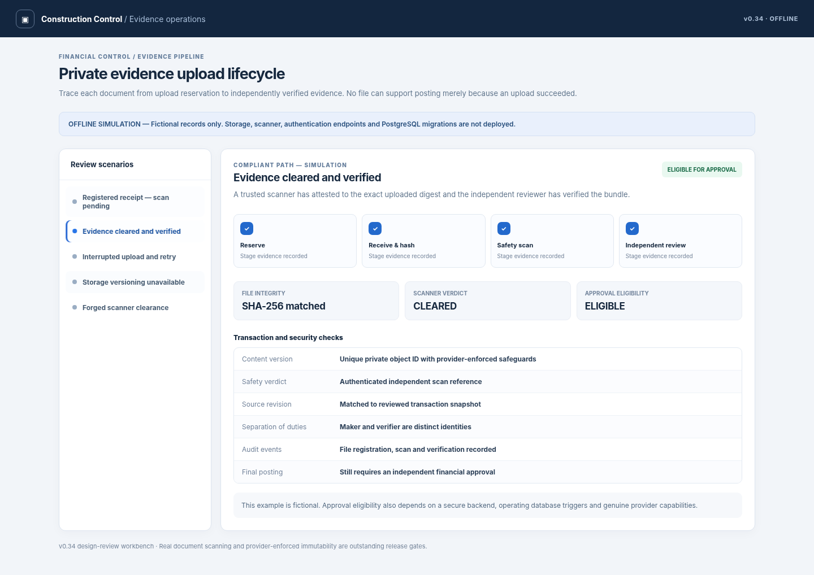

Understand the project's position
Keep site activity, expense context and commercial records closer to one management view.
When projects move, costs move with them. Construction Control brings progress, claims, billing and project records closer together so owners can spend less time chasing the story behind the numbers.

SANITIZED UI PREVIEWProgress reports, subcontractor costs, material purchases, certificates and evidence often reach management at different times. The true state of a project becomes difficult to understand without repeatedly asking for updates.
Construction Control links operational records with cost and commercial visibility so responsible teams can understand progress, outstanding exposures and what needs approval.
It's not another construction dashboard you're after. It's the confidence of knowing what needs a decision while execution continues elsewhere.
Keep site activity, expense context and commercial records closer to one management view.
Cost claims, deductions and receivables provide context for the commercial picture.
When important evidence and approvals are organized, management can spend less time reconstructing updates.
Construction Control is used in business operations. Public screenshots are sample-data development captures; deeper finance and procurement functions may require separate integration and acceptance.
See real interface captures ↗Many proposed standalone products are already part of Construction Control's project, finance and procurement scope. We present them as one connected operating model.
Link project progress, milestones, field updates and outsourced work so the office can understand what is happening.
Bring BOQ context, expenses, subcontractor commitments and financial summaries closer to project decisions.
Give running bills, deductions and receivables a traceable connection to projects.
Connect procurement requirements, relevant suppliers, receiving and project-linked costs; specialized WMS capabilities remain separate.
Show pending decisions, approvals, documentation and financial exposures in an accessible management view.
Project documents and commercial records provide some coverage, while dedicated renewal, warranty and obligation monitoring remain an opportunity.
Construction Control includes substantial project and finance workflows, but module maturity and production enablement vary. Some deeper finance, procurement and inventory operations may remain gated or require deployment-specific acceptance.
See genuine future product ideas ↗Modules are described from the user's perspective. Exact controls, automations, configurations and integrations are defined during a private implementation discussion.
Keep the project register, parties, workstreams and status in a structured operating view.
Organize planned activities, reporting responsibilities and follow-through.
Associate quantities, expected costs and project spending with the relevant work.
Bring periodic field updates and photographs closer to office-side oversight.
Organize outsourced work, invoices, deductions, retention and responsible approvals.
Coordinate project-linked cost claims and segregation of reviews.
Track certified work, commercial deductions and receivables context.
Bring supplier balances and payment obligations into the management picture.
Organize supporting records, approvals and evidence workflows.
Enable summaries of project and financial status for decision-makers.
Selected authentic interface screenshots reveal the design language and user experience. Sensitive records and proprietary implementation details remain outside the public showcase.
Bring claims and project cost attribution under clearer control.
Make deductions, certificates and outstanding balances more understandable.
 SELECTED PRODUCT CAPTURE
SELECTED PRODUCT CAPTUREKeep supporting documents connected to the decisions they inform.

SELECTED PRODUCT CAPTUREActive in company operations; configuration and integrations are tailored to the organization.
Reduce the manual work needed to understand site progress.
Connect operational records to cost, billing and exposure.
Keep review and evidence responsibilities visible.
Adapt to contractor roles, reporting cycles and company structures.
Our approach begins with how your team actually works. We identify the repetitive administrative steps, define the controls that matter, and discuss an implementation that fits—not a longer software checklist.
Construction Control is used in business operations. Screenshots are authentic sample-data and historical offline preview captures and should not be interpreted as evidence of any particular live integration, customer deployment feature, or independent certification.
You don't need more reports to read. Show us what is hardest to track across your sites, expenses and billing—we'll discuss the visibility that matters.